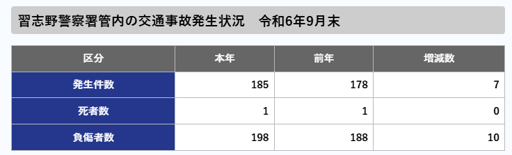
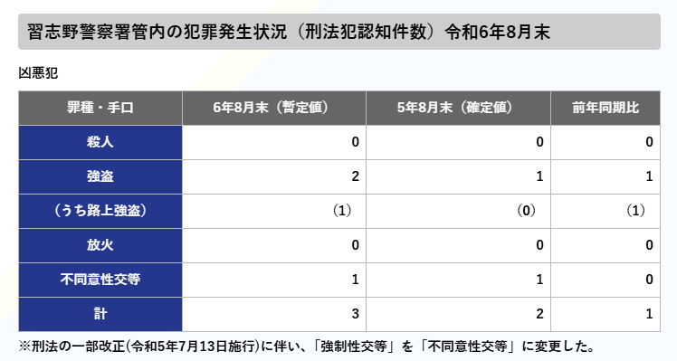

このページでは津田沼の治安（事件や事故）の件数などを参考に、津田沼が安全かを見ていきましょう‼

津田沼の事故発生件数の詳細なデータは確認できませんでしたが、習志野市の交通事故などの件数を見てみましょう。写真は習志野警察署の令和六年度9月末までの事故の件数と昨年度の発生件数です。
前年よりも事故の件数や負傷者が増えていることがわかります。しかし死傷者は変わっていないことから、大きな事故というのは減少傾向にあるのではないかと推測できます。
(表は習志野警察署管内の事件・事故発生状況から)

この画像は習志野警察署管内で発生したすべての部類の事件を合わせた事件の数です。これを見ると強盗は増えてしまっていますが、そのほかの殺人事件や放火などは前年同様に0件で
前年と比べて減少しているので犯罪の多さという面では少し安心できる要素ではあるかなと思います。
(表は習志野警察署管内の事件・事故発生状況から)
津田沼駅周辺は飲み屋街があり、夜間は人通りが多くなる一方で、治安に関しては一般的には比較的良好とされています。
ただし、繁華街では酔客が多くなるため、酔っ払いやトラブルも発生する可能性があります。しかし周辺には住宅街も多く家族連れや高齢者も多く住んでいるため、治安意識が高いとされるので比較的良いと言えますね!
習志野市全体で見ると事故が増えてきてはいるものの死者が出るような重大事故の件数は減少傾向にあります。
津田沼地区で見ると飲み屋街も多く夜は酔客が多いと思われますが家族連れや高齢者も多くすんでいるため安意識は高くほかの地域よりも安全だと言えるでしょう。